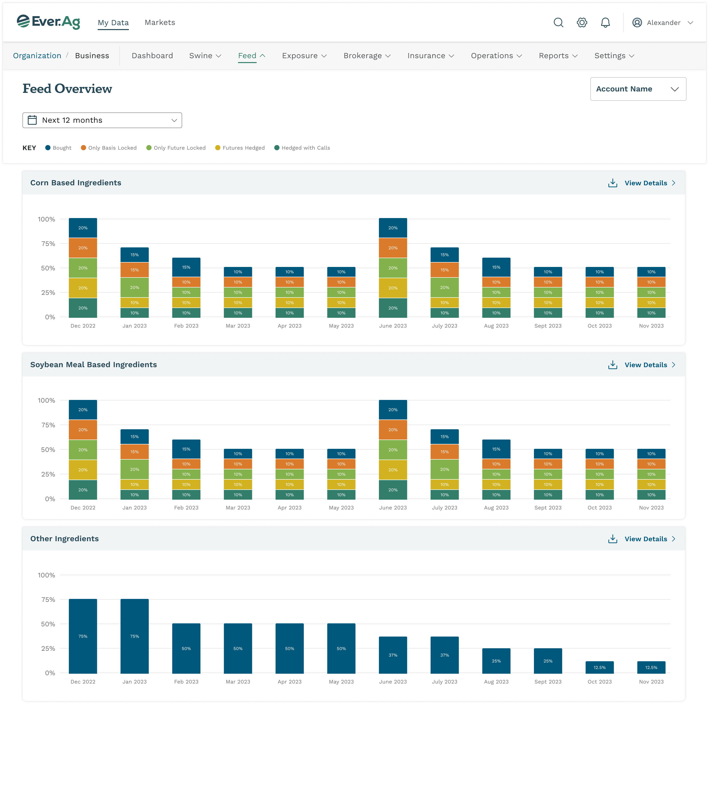
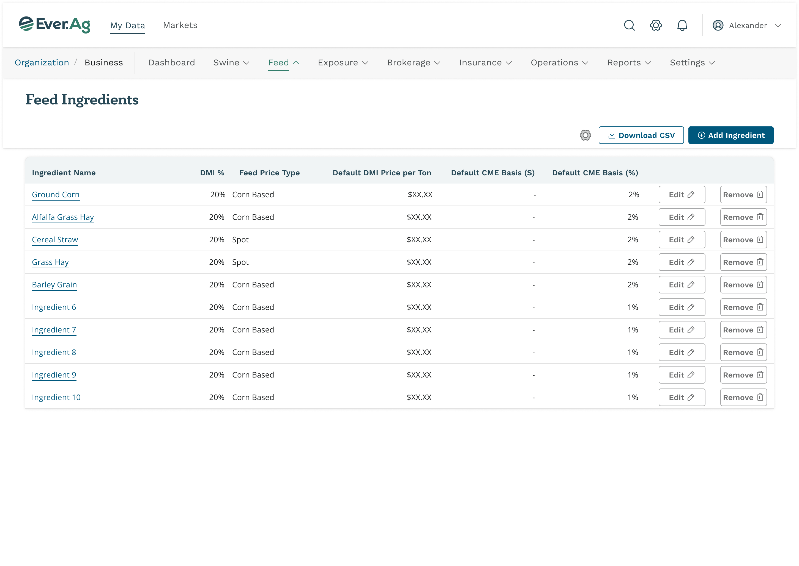
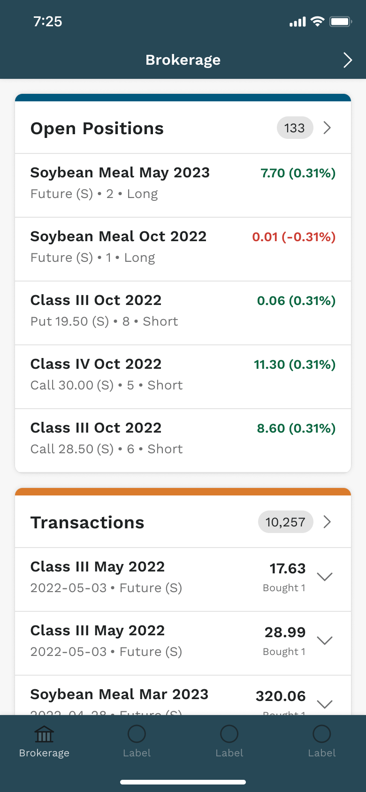
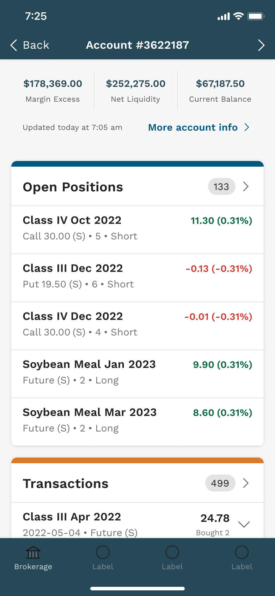
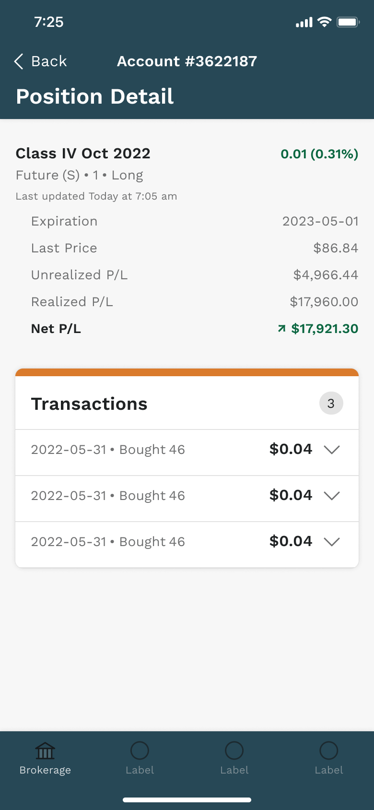
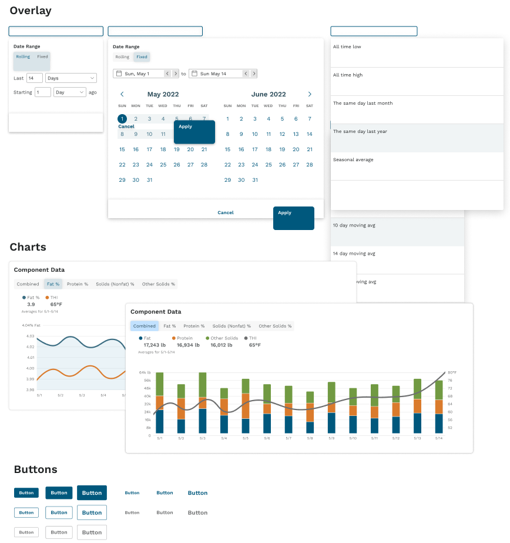

Ever.Ag
A shared foundation for a growing product family.
- Role
- Product design lead
- Studio and dates
- Foundry · 2022–24
- Scope
- Design system · Web & mobile products
I pitched the engagement and led design across the suite. After our team established the foundations, I owned the system hands-on and worked with teams across three countries to carry it into web and mobile products.





From a brokerage overview to an account and a single position. The phone keeps the same balance, price, and transaction patterns.
